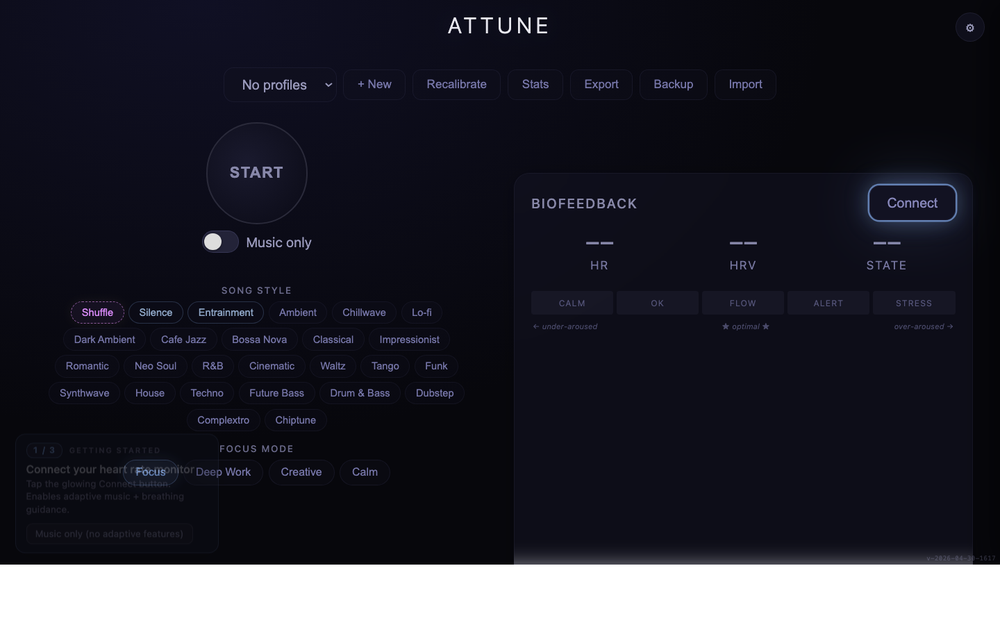

Attune
2026-05-02 · mtime · https://github.com/jsharf/attune

Recent commits
0cb3f69 Fix README paths after move into musicflow subdir def9e0f Add BreathNudge spinout as subdir e1cdd47 Stop drawViz RAF when idle — fix tab-open battery drain 3c742b2 iOS-style toggle for Music-only switch e4cafc1 Promote Music-only toggle to main UI under START 7836328 Music-only: keep auto-calm preset switch active a32596b Music-only mode: gate ALL interventions, not just TTS fd19855 Fix dismiss → fatigue-still-high → infinite re-prompt loop 14e98b9 Brandon UX pass — kill skip-shunt, TTS rate cap, music-only mode 6463739 Apnea collapse ratio 0.4 → 0.45